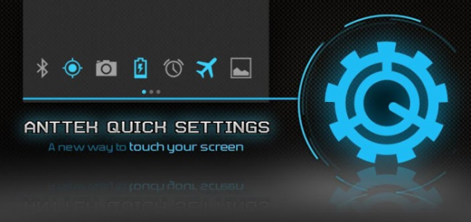

AntTek Quick Settings – Получаем быстрый доступ к настройкам на любом Android-устройстве
Одной из наиболее полезных функций в версии Android 4.2.2 является функция быстрого доступа к меню настроек (Quick Settings), которая позволяет пользователю с лёгкостью настроить основные параметры своего устройства. Проведя пальцем вниз, начиная от правого края панели уведомлений, пользователь получает доступ к активации Bluetooth и Wi-Fi, настройке яркости и др. К сожалению, в настоящий момент всего несколько процентов Android-устройств работают на платформе Android 4.2 Jelly Bean, из которых лишь некоторые обновлены до 4.2.2. Однако бесплатное приложение AntTek Quick Settings, которое доступно для любого Android-устройства, использующего версию Android 2.1 и выше, позволяет не только получить достойную замену Quick Settings, но и предоставляет ещё целую кучу дополнительных возможностей.
Даже те, у кого установлена самая последняя версия Android OS, смогут найти в AntTek Quick Settings множество полезных функций для настройки своего устройства. После установки для входа в приложение достаточно будет провести пальцем вниз от правого края панели уведомлений. Настройки Bluetooth, GPS, яркости, автоматического поворота экрана и др. будут уже произведены и не потребуют особого вмешательства со стороны пользователя. Однако оставлять всё как есть – тоже не самый лучший вариант. Поэтому после запуска приложения нажмите на значок в верхнем правом углу, чтобы получить доступ к настройкам.
Здесь вы сможете, например, изменить тему приложения. В AntTek Quick Settings имеется 4 предустановленных темы, но каждую из них можно дополнительно настроить на свой вкус. Пользователь может вручную выбрать цвет, шрифт, стиль иконок, фон и многое другое. В меню настроек вы также можете изменить размер и положение выпадающей панели. Некоторые предпочитаю не очень крупную панель, обеспечивающую более удобную работу. Кроме того, в меню изменение размера вы сможете выбрать подходящий размер для иконок приложения. Важной составляющей AntTek Quick Settings является раздел Action Picker для более глубокой настройки системы. Чтобы добавить или удалить какой-либо пункт, просто нажмите на значок «+» в выпадающем меню. Это позволит вам установить быстрые настройки для самых разных элементов, будь то ярлыки приложений, отправка сообщений, набор номера или закладка веб-браузера.
Таким образом, с помощью AntTek Quick Settings можно не просто запускать приложение, но и автоматические выполнять установленное действие, например сразу получать доступ к определённым файлам в Google Drive, открывать желаемую книгу в Google Play Book или заметку в Evernote, находить нужные письма в Gmail и т.д. Бесплатная версия AntTek Quick Settings неплохо справляется со своими задачами, однако в Pro-версии (1,86$) вас ждёт ещё больше функций, включая поддержку нажатия с удержанием, отсутствие ограничений на действия, дополнительные настройки и др. Если кто-то из наших читателей использует AntTek Quick Settings или другие похожие приложения, то напишет несколько слов в комментариях о вашем опыте работы с ними.